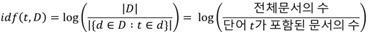

Data analysis python

TF-IDF에 대한 쉬운 설명
TF-IDF
- TF-IDF(Term Frequency – Inverse Document Frequency)는 정보검색론에서 흔하게 접하는 가중치를 구하는 알고리즘
- ElasticSearch나 Lucene에서 tf-idf는 검색 결과에 scoring를 하는 데 사용
- 수식은 다음과 같다.
TF와 IDF에 대해 알아보겠다.
TF(Term Frequency)
- 문서 내 특정 단어의 빈도
- tf(코로나, 코로나관련기사1)는 관련기사1에서 코로나라는 키워드 빈도수를 뜻한다.
- 문서 내에 내가 찾는 키워드가 많이 등장한다면 이 문서는 당연히 내 키워드와 관련성이 높다고 할 수 있다.
- tf값은 단어의 등장 횟수가 증가할수록 무한대로 발산하게 된다. 발산하는 tf값을 정규화시키는 세 가지 방법이 있다.
- 불린 빈도(Boolean Frequency)
- 로그 스케일 빈도(Logarithmically Scaled Frequency)
- 증가 빈도(Augmented Frequency)
불린 빈도
- 문서에 단어가 나타나면 1, 없으면 0으로 표기
- 문서에 특정 단어가 1번 나타나든 100번 나타나든 똑같은 가중치를 나타낸다.
- TF가 중요하지 않은 경우에 사용(단어가 매칭되는 문서가 나타나기만 하면 될 때)
로그 스케일 빈도
- 로그 변환을 해주면 기울기(증가율)가 처음엔 가파르다가 점점 완만해지는 것을 볼 수 있다.
- x축이 빈도수, y축이 TF값
- 작은 빈도수 차이일 땐 TF값의 차가 크지만, 빈도수가 크면 TF값의 차가 그렇게 크지 않다는 것을 볼 수 있다.
- 즉, 특정 단어가 1번 나타났느냐, 5번 나타났느냐의 차이는 크지만 10000번 나타났느냐
증가 빈도
- 문서 길이에 따라 단어의 상대적 빈도 값을 조정해주는 방법
- 어떤 두 문서 특정 단어 빈도수가 동일하다면, 문서길이가 더 짧은 문서에서의 그 단어 빈도수가 상대적으로 더 클 것이다.
- 스케일이 최대 1로 고정되는 효과
- 단어의 빈도를 문서 내 단어들의 빈도 중 최대값으로 나눠주는 방법
- 수식은 다음과 같다.
- 1차 함수 형태의 그래프로 나타나게 된다.
IDF(Inverse Document Frequency)
IDF를 이해하기 위해 DF를 알아보자.
DF
- 한 단어가 전체 문서 집합 내에서 얼마나 공통적으로 많이 등장하는지를 나타내는 값
- 해당 단어가 나타난 문서 수
- 수식은 다음과 같다.
- 만약 모든 뉴스기사에 코로나라는 키워드가 많이 등장한다면, 해당 단어 자체가 변별력이 떨어질 것이다.
- 다른 예로, ‘the’, ‘a’, ‘is’, ‘on’과 같은 모든 문서에 등장할 만한 키워드로 유사성을 계산해 검색결과에 반영한다면 부정확해질 수밖에 없을 것.
- 특정 단어 t가 모든 문서에 다 등장하는 흔한 단어라면, TF-IDF 가중치를 낮춰주려는 것
- DF값이 클수록, TF-IDF의 가중치 값을 낮춰주려면 DF값에 역수를 취해야 한다. DF의 역수가 바로 IDF
IDF
- 수식은 다음과 같다. 전체 문서의 수가 많을 경우 IDF값이 기하급수적으로 커지게 되므로 로그변환을 해준다. 
- 특정 단어가 전체 문서 안에 존재하지 않을 경우 분모가 0이 되므로 이를 방지하기 위해 분모에 1을 더해주는 것이 일반적.
- 그래프는 다음과 같다. 특정단어가 들어간 문서가 많을수록, DF가 커질수록 IDF는 낮아진다.
Conclusion
- TF-IDF값은 특정 문서 내에 단어 빈도(TF)가 높을수록, 전체 문서들엔 그 단어를 포함한 문서(DF)가 적을수록 높아진다.